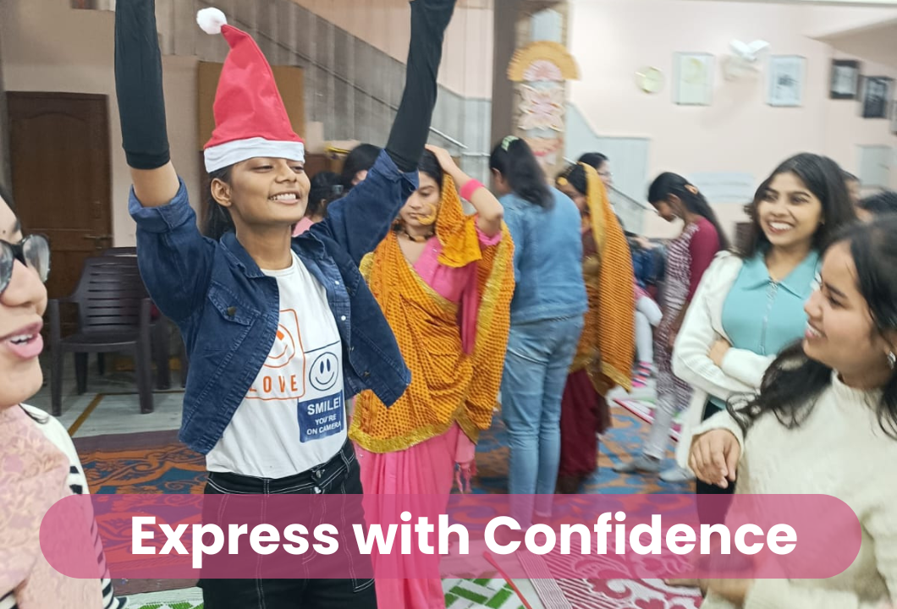
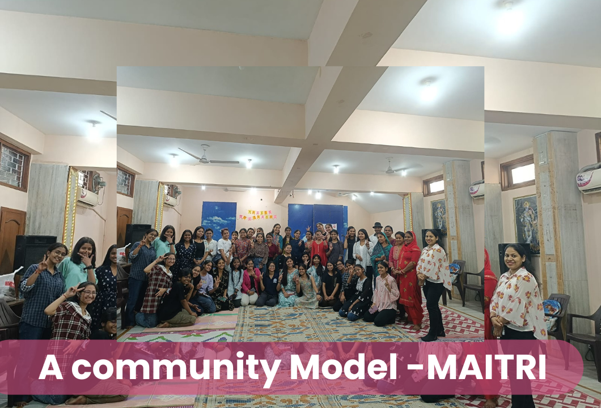
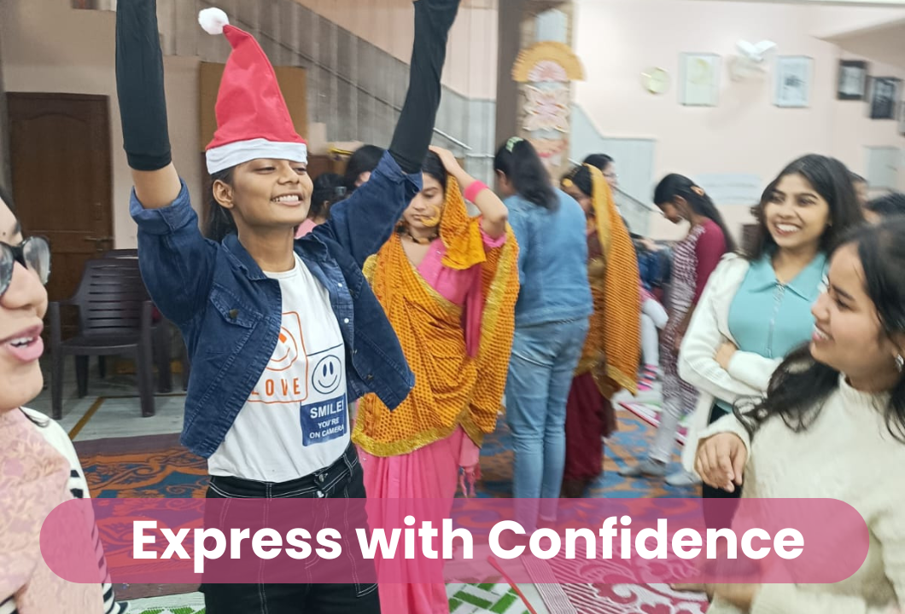
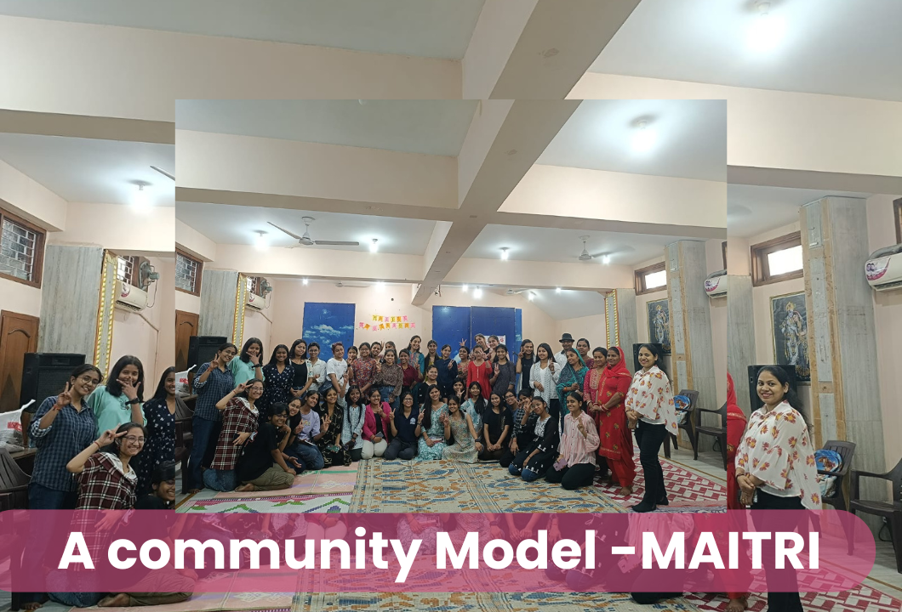

How Maitri works
A long-term mentorship and aspiration ecosystem that builds identity, voice, and credible pathways from school to work.
How Maitri works
 



A girl's journey through Maitri
Peer mentoring
A layered mentorship model where seniors guide juniors in small, relationship-oriented groups. Trained mentors provide accountability, emotional safety, and continuity through school, college, and early work transitions.
Skill building
Practical modules on interview preparation, resume building, professional etiquette, goal-setting, critical thinking, and storytelling for impact. Future tracks include financial literacy, digital literacy, and leadership labs.
Pathways
Scholarships, internships, exposure visits, public speaking showcases, and first job placements through partner organizations. Each pathway is mapped to the skills and confidence built in earlier steps.
Sisterhood model (core of the program)
Level 1 — Core Girls
Participants at the heart of the program. They join structured sessions, build confidence through peer circles, and are paired with mentors who walk alongside them through school, college, and early career transitions.
Level 2 — Peer Mentors
Senior girls who have completed a full mentorship cycle. They lead small groups, provide day-to-day accountability, and model the confidence they once built as core participants.
Level 3 — Senior Mentors
Experienced mentors who train and support peer mentors. They facilitate mentor training on feedback techniques, structured storytelling guidance, maintaining boundaries, and ensuring emotional safety.
Level 4 — Founding & Leadership Team
The leadership layer that designs curriculum, manages partnerships, sets program standards, and ensures the mentorship culture stays relationship-oriented and rooted in the community it serves.
Ninaad: community podcast
Meenakshi Yadav
From LSR College to campaign manager at I-PAC. A Vahini scholar who turned mentorship into a career in public policy.
Sumitra Bharti
Transitioned from Humanities to an Advanced Diploma in Software Programming. Proof that pathways can be rewritten.
Subhoshree Saha
Excellent 12th board results, selected as a Karm Fellow. A story of academic grit supported by the Maitri sisterhood.
Team Maitri
Anjali G Sharma
Community Builder and Mentor
Taniya Negi
Alumna of SOE, Kalkaji. Pursuing B. Pharma at DPSRU.
Nandini Yadav
Alumna of SOE Kalkaji. Graduate Mass Communication DU.
Nandini Tiwari
Alumna of GGSSS, Tigri. Software Engineer Unthinkable solutions.
Anjali Kumari
Alumna of RPVV. Lease Analyst at JLL.
Bhavya
Alumna PDSKV govt school, Fatehpur Beri, ITEP student-DU
Sisterhood model
Shared groups, celebration of wins, alumni network, and continuity across transitions. The community is the infrastructure: girls support each other beyond any single program cycle.
The sisterhood is what makes the program durable. When a girl moves from school to college, or from college to her first job, her mentors and peers move with her. The relationship does not end when a curriculum does.
Run a program with us
We co-design internship pipelines, mentorship circles, and transition support with partners who share our values.